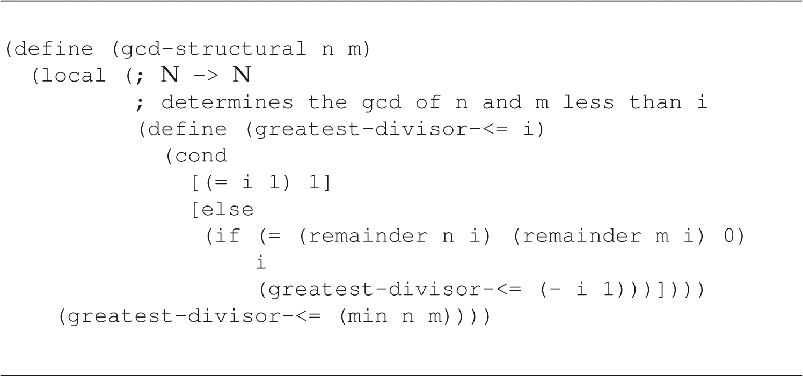
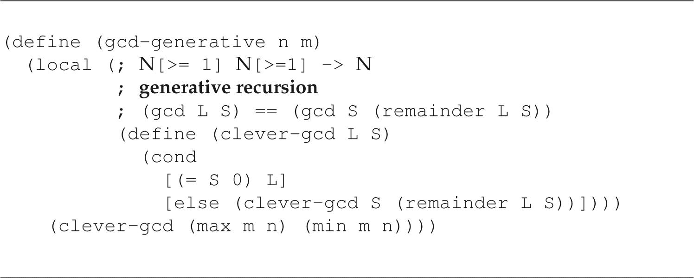
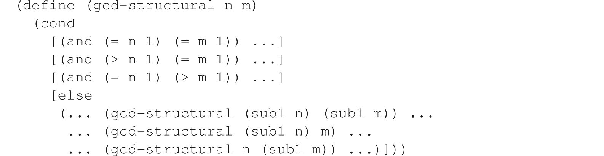

26.4 Making Choices
When you interact with a function f that sorts lists of numbers, it is impossible for you to know whether f is sort< or quick-sort<. The two functions behave in an observably equivalent way. This raises the question of which of the two a programming language should provide. More generally, when we can design a function using structural recursion and generative recursion, we must figure out which one to pick.
Observable equivalence is a central concept from the study of programming languages.
To illustrate the consequences of this choice, we discuss a classical example from mathematics: the problem of finding the greatest common divisor (gcd) of two positive natural numbers. All such numbers have 1 as divisor in common. On occasion—say, 2 and 3—this is also the only common divisor. Both 6 and 25 are numbers with several divisors:
John Stone suggested the greatest common divisor as a suitable example.
• 6 is evenly divisible by 1, 2, 3, and 6;
• 25 is evenly divisible by 1, 5, and 25.
And yet, their greatest common divisor is 1. In contrast, 18 and 24 have many common divisors and their greatest common divisor is 6:
• 18 is evenly divisible by 1, 2, 3, 6, 9, and 18;
• 24 is evenly divisible by 1, 2, 3, 4, 6, 8, 12, and 24.
Completing the first three steps of the design recipe is straightforward:
; N[>= 1] N[>= 1] -> N
; finds the greatest common divisor of n and m
(check-expect (gcd 6 25) 1)
(check-expect (gcd 18 24) 6)
(define (gcd n m) 42)
The signature specifies the inputs as natural numbers greater than or equal to 1.
From here we design both a structural and a generative recursive solution. Since this part of the book is about generative recursion, we merely present a structural solution in figure 154 and leave the design ideas to exercises. Just note that (= (remainder n i) (remainder m i) 0) encodes the idea that both n and m are “evenly divisible” by i.

Figure 154: Finding the greatest common divisor via structural recursion
Exercise 438. In your words: how does greatest-divisor-<= work? Use the design recipe to find the right words. Why does the locally defined greatest-divisor-<= recur on (min n m)? 
Although the design of gcd-structural is rather straightforward, it is also naive. It simply tests for every number between the smaller of n and m and 1 whether it divides both n and m evenly and returns the first such number. For small n and m, this works just fine. Consider the following example, however:
(gcd-structural 101135853 45014640)
The result is 177. To get there, gcd-structural checks the “evenly divisible” condition for 45014640, that is, it checks 45014640 - 177 remainders. Checking that many remainders—twice!—is a large effort, and even reasonably fast computers need time to complete this task.
Exercise 439. Copy gcd-structural into DrRacket and evaluate
(time (gcd-structural 101135853 45014640))
in the interactions area.
Since mathematicians recognized the inefficiency of this structural function a long time ago, they studied the problem of finding divisors in depth. The essential insight is that
for two natural numbers, L for large and S for small, the greatest common divisor is equal to the greatest common divisor of S and the remainder of L divided by S.
Here is how we can articulate this insight as an equation:
(gcd L S) == (gcd S (remainder L S))
Since (remainder L S) is smaller than both L and S, the right-hand side use of gcd consumes S first.
Here is how this insight applies to our small example:
• The given numbers are 18 and 24.
• According to the insight, they have the same gcd as 18 and 6.
• And these two have the same greatest common divisor as 6 and 0.
Now we seem stuck because 0 is unexpected. But, 0 can be evenly divided by every number, meaning we have found our answer: 6.
Working through the example not only validates the basic insight but also suggests how to turn the insight into an algorithm:
• when the smaller of the numbers is 0, we face a trivial case;
• the larger of the two numbers is the solution in the trivial case;
• generating a new problem requires one remainder operation; and
• the above equation tells us that the answer to the newly generated problem is also the answer to the originally given problem.
In short, the answers for the four design-recipe questions fall out.
Figure 155 presents the definition of the algorithm. The local definition introduces the workhorse of the function: clever-gcd. Its first cond line discovers the trivial case by comparing smaller to 0 and produces the matching solution. The generative step uses smaller as the new first argument and (remainder large small) as the new second argument to clever-gcd.

Figure 155: Finding the greatest common divisor via generative recursion
If we now use gcd-generative with our above example,
(gcd-generative 101135853 45014640)
we see that the response is nearly instantaneous. A hand-evaluation shows that clever-gcd recurs only nine times before it produces the solution:
…
== (clever-gcd 101135853 45014640)
== (clever-gcd 45014640 11106573)
== (clever-gcd 11106573 588348)
== (clever-gcd 588348 516309)
== (clever-gcd 516309 72039)
== (clever-gcd 72039 12036)
== (clever-gcd 12036 11859)
== (clever-gcd 11859 177)
== (clever-gcd 177 0)
This also means that it checks only nine remainder conditions, clearly a much smaller effort than gcd-structural expends.
Exercise 440. Copy gcd-generative into the definitions area of DrRacket and evaluate
(time (gcd-generative 101135853 45014640))
in the interactions area.
You may now think that generative recursion design has discovered a much faster solution to the gcd problem, and you may conclude that generative recursion is always the right way to go. This judgment is too rash for three reasons. First, even a well-designed algorithm isn’t always faster than an equivalent structurally recursive function. For example, quick-sort< wins only for large lists; for small ones, the standard sort< function is faster. Worse, a badly designed algorithm can wreak havoc on the performance of a program. Second, it is typically easier to design a function using the recipe for structural recursion. Conversely, designing an algorithm requires an idea of how to generate new problems, a step that often requires some deep insight. Finally, programmers who read functions can easily understand structurally recursive functions, even without much documentation. The generative step of an algorithm, though, is based on a “eureka!” and, without a good explanation, is difficult to understand for future readers—and that includes older versions of yourself.
Experience shows that most functions in a program employ structural design; only a few exploit generative recursion. When we encounter a situation where a design could use the recipe for either structural or generative recursion, the best approach is to start with a structural version. If the result turns out to be too slow for the task at hand—and only then—it is time to explore the use of generative recursion.
Exercise 441. Evaluate
(quick-sort< (list 1 2 3 4 5 6 7 8 9 10 11 12 13 14))
by hand. Show only those lines that introduce a new recursive call to quick-sort<. How many recursive applications of quick-sort< are required? How many recursive applications of the append function? Suggest a general rule for a list of length n.
Evaluate
(quick-sort< (list 1 2 3 4 5 6 7 8 9 10 11 12 13 14))
by hand. How many recursive applications of quick-sort< are required? How many recursive applications of append? Does this contradict the first part of the exercise?
Exercise 442. Add sort< and quick-sort< to the definitions area. Run tests on the functions to ensure that they work on basic examples. Also develop create-tests, a function that creates large test cases randomly. Then explore how fast each works on various lists.
Does the experiment confirm the claim that the plain sort< function often wins over quick-sort< for short lists and vice versa?
Determine the cross-over point. Use it to build a clever-sort function that behaves like quick-sort< for large lists and like sort< for lists below this cross-over point. Compare with exercise 427.
Exercise 443. Given the header material for gcd-structural, a naive use of the design recipe might use the following template or some variant:

Why is it impossible to find a divisor with this strategy?
Exercise 444. Exercise 443 means that the design for gcd-structural calls for some planning and a design-by-composition approach.
Ideally, you should use sets not lists.
The very explanation of “greatest common denominator” suggests a two-stage approach. First design a function that can compute the list of divisors of a natural number. Second, design a function that picks the largest common number in the list of divisors of n and the list of divisors of m. The overall function would look like this:
(define (gcd-structural S L)
(largest-common (divisors S S) (divisors S L)))
; N[>= 1] N[>= 1] -> [List-of N]
; computes the divisors of l smaller or equal to k
(define (divisors k l)
'())
; [List-of N] [List-of N] -> N
; finds the largest number common to both k and l
(define (largest-common k l)
1)
Why do you think divisors consumes two numbers? Why does it consume S as the first argument in both uses?